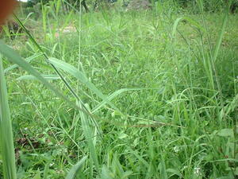

lama ne egpamuhawangan 
/lama_nɔ_ʔɔgpamugawaŋan/
n.
a flat, cool area with long grasses
Ka seini ne lugal maagsil wey malu mallayat ka me hilamunen, egkaayun seini ne eg-uubpaan te egpanumansuman wey ke egparumehey kew te asawa nu, piru kenè egkaayun ne eggahalawan.
Seini ne lugal egngaranan te Lama ne Egpamuhawangan su meupiya ne eg-uubpaan te egsuman-suman.
This place is called Lama ne Egpamuhawangan because it is a good place to stay for daydreaming.
Eng. prairie; plain, a; grassland; flat land; land, flat; steppe
OCM: Location (131), Climate (132), Ethnogeography (823)
DDP: Plain, plateau (1.2.1.3)
Online dict status: -
Usage level: R
Updated by: QDL,RJH,NJK,RJH,QDL,RJH
Last updated: 10/Mar/2014
This page last updated: 28-Dec-2019
Copyright © 2009-2014, Matigsalug Language Christian Association, Inc